Tentang Postgresql
Selamat datang kembali semuanya, Mari kita lanjutkan belajar PostgreSQL nya SEMANGAT 😁
UNIONS
UNIONS digunakan untuk menggabungkan tabel misalnya untuk mengetahui penjualan sales tiap bulannya.

Section Overview :
- Timestamps & EXTRACK
- TIME
- DATE
- TIMESTAMP
- TIMESTAMPTZ
- TIMEZONE
- NOW
- TIMEOFDAY
- CURRENT_TIME
- CURRENT_DATE
- EXTRACT()
- YEAR
- MONTH
- DAY
- WEEK
- QUARTER Seperti berikut perintahnya : 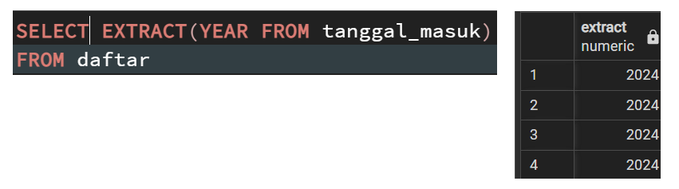
- AGE()
- TO_CHAR()
- Math Function Format math : KLIK disini!!!
- String Function Digunakan untuk mengedit, menggabungkan dan mengubah teks Format : KLIK LINK INI !!!
- Sub-Query
- Self-Join
Untuk menangani seperti Tanggal dan waktu.
Ada 4 tipe data yang merujuk tentang informasi tanggal
atau waktu
:
Tentang waktu seperti : Jam, menit, dan detik.
Tipe data yang berisi tentang : Tanggal, Hari, Bulan, dan Tahun
Menampilkan Date dan Time
Menampilkan informasi tanggal waktu dan zona waktu
Beberapa fungsi dan operasi yang terkait tipe data spesifik:
untuk mengetahui kita terkonfigurasi di server apa, Perintahnya : SHOWTIMEZONE
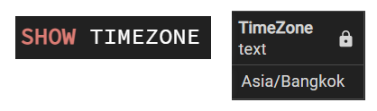untuk melihat tanggal saat itu juga dan waktu, Perintahnya : SELECT NOW()
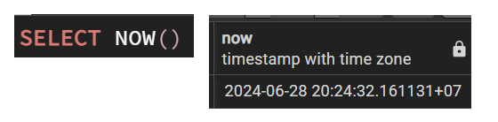Sama seperi now, tetapi bedanya dia memberi tahu kalau hari ini hari apa dan bulan menggunakan string, lebih detail karna di beri tahu hari tsb.
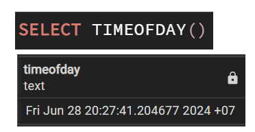hanya menampilkan waktu saat ini dan zona waktu
Menampilkan informasi tentang tahun, bulan, dan tanggal hari tsb.
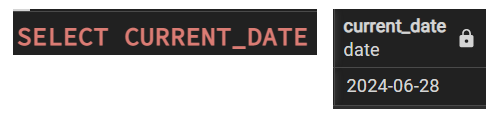Extrack informasi menggunakan :
Memungkinkan anda untuk mengekstrak :
Untuk menghitung umur dari sebuah data.
Seperti berikut perintahnya : 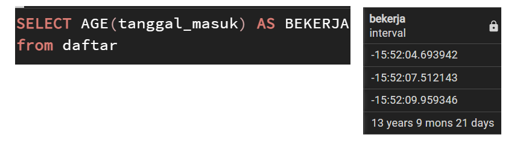untuk convert tipe data ke text, kode text ada banyak silahkan kunjungi website resminya :
Daftar Formating ada DISINI KLIK LINK INI !!!Seperti berikut contohnya :
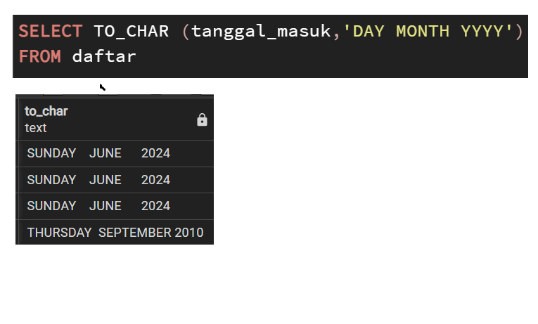contoh :
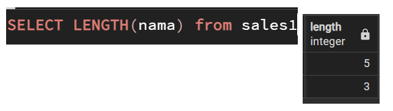Membuat query lebih kompleks
Contoh :
Memfilter nama dan menampilkan yang bernama arman dari sales1.
contoh lain :
Between memfilter antara tahun 2000 sampai 2010.
Contoh Selanjutnya :
Memfilter dari kedua tabel, menampilkan nama yang penjualan nya lebih dari 49.000.000
Suatu tabel digabungkan dengan dirinya sendiri untuk membandingkan nilai dalam baris dan kolom di tabel yang sama.
Conditional Expresisions and Operators
Di bagian ini kita akan fokus pada kemampuan melakukan operasi, Seperti :
- CASE
- COALESCE
- NULLIF
- CAST
- VIEWS
- Import and Export Functionality
Case bisa digunakan jika kondisi terpenuhi seperti if statement, Berikut perintahnya :
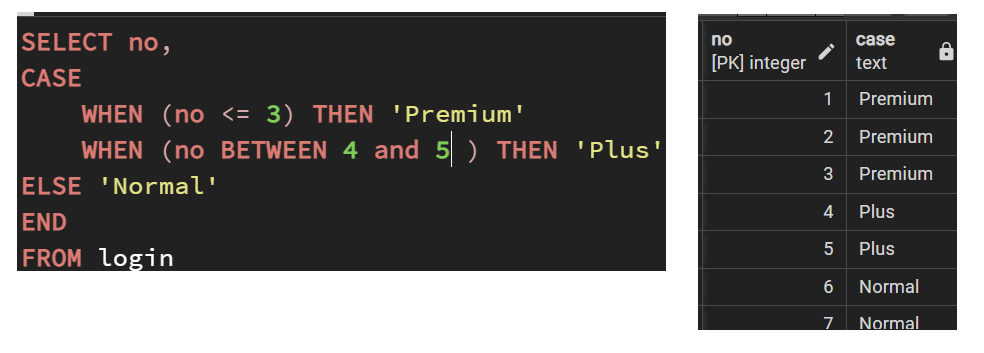Gambar diatas, saya memberikan reward untuk urutan login pertama kali di game yang baru di rilis, dimana no urut 1 sampai 3 disebut Premium, 4 dan 5 plus, dan lainnya yaitu normal
Fungsi COALESCE menerima jumlah tak terbataas dalam argument, menggembalikan argument pertama yang
not null (tidak kosong), jika semua argument null maka fungsi COALESCE akan mengembalikan null.
Contohnya :
pada table di atas terdapat item yang mendapat discount, tetapi tidak dengan item C.
Mari kita lihat hasil Discount setiap item yang sudah di Total harga setelah Discount

Setelah melihat hasil discount tiap item, akan tetapi item C tidak dapat di jumlah total nya.
Dengan perintah COALESCE tanpa mengubah isi table bisa memberikan solusi, Seperti berikut perintahnya :
Jadi di sini Sql akan memeriksa diskon dan apakah nilai nya not null maka akan mengembalikan nilai
tsb, apabila nilainya null maka saya memberinya nilai 0, di table item C price nya 100 dan discount nya
null maka akan di kurangi 0 jadi hasilnya tetap.
fungsi ini untuk berjaga- jaga jika kalian suatu
saat menemukan tabel yang nilai nya null
Fungsi NULLIF mengambil dua input dan mengembalikan null jika keduanya sama. jika keduanya berbeda contoh 10 dan 12 maka mengembalikan 10, Contoh :

Perhatikan table di atas, mari kita hitung rasio nya dari kedua ruangan A dan B.
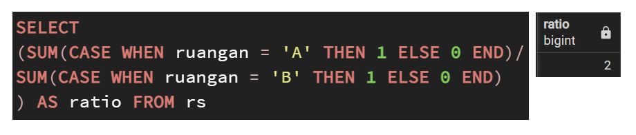 Pada gambar di atas saya akan menghitung berapa org yang ada di ruangan A dan B, dan menghitung berapa
rasio dari A dan B.
lalu ketika yang berada di ruangan B meninggalkan ruangan tsb, dan saya coba
menghitung kembali rasio nya.
Muncul pesan error karna ruangan B yang sebelumnya sudah di hapus, dsini perintah NULLIF digunakan.
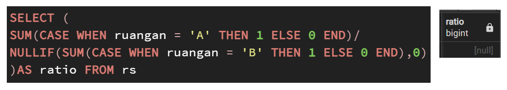fungsi NULLIF akan mengembalikan null jika keduanya cocok, saya mengembalikan null jika hasil jumlahnya 0.
CAST untuk convert dari satu tipe data ke tipe data lain, misalnya anda bisa mengubah string ke integer.
Seperti berikut perintahnya :
Pada gambar di atas saya mengubah tipe data pada table barang kolom price dari integer menjadi varchar.
Sering kali kita melihat data dan mengetik berulang" untuk memastikan data itu sesuai, VIEWS berguna jika kita ingin menyimpan data yang sering kita lihat jadi kita tidak perlu mengetik berulang-ulang, seperti memanggil nama table, Berikut perintah VIEW :
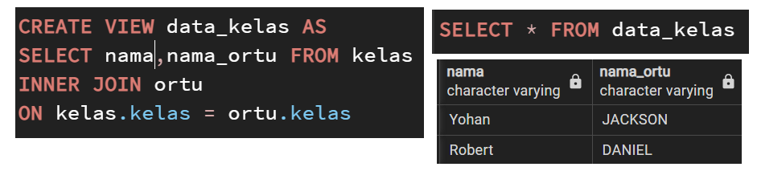Pada gambar di atas saya membuat View data_kelas yang menampilkan nama dari table kelas dan nama_ortu dari table ortu, dan nantinya ketika ingin menampilkan keduanya tidak perlu INNERJOIN lagi tetapi tinggal memanggil View yang sudah di buat yaitu SELECT * FROM data_kelas, jika ingin menghapus view menggunakan drop view.
Import untuk memindahkan data table misalnya dari excel ke postgresql seperti berikut :
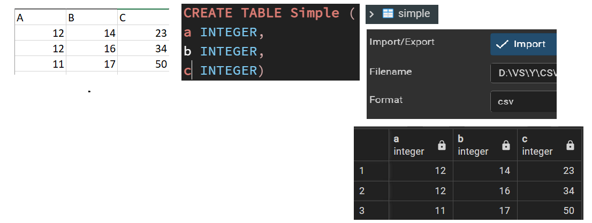disini saya membuat isi data di excel dengan format file csv lalu membuat table Simple yang isinya kosong hanya berupa kolom a, b, dan c di Pgadmin, lalu saya memindahkan data yang ada di file csv ke table simple, refresh ketika sudah membuat table Simple lalu klik kanan pada table Simple lalu klik Import/Export lalu klik folder yang sudah di buat (yg excel) lalu pilih csv lalu klik ok, lalu silahkan lihat isi dari table Simple akan berisi data dari file yang sudah di import
Sedangkan Export digunakan untuk save file PostgreSQL ke format csv lalu file yg tdinya di Postgre bisa di buka di Excel.